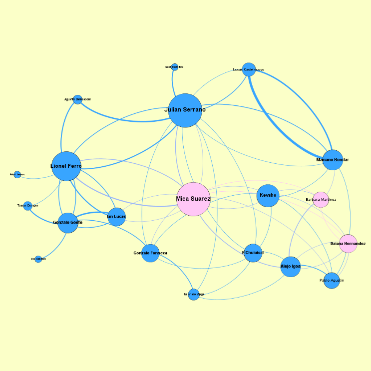
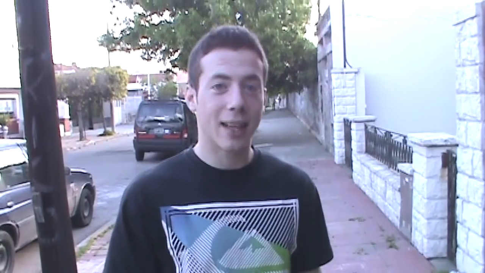
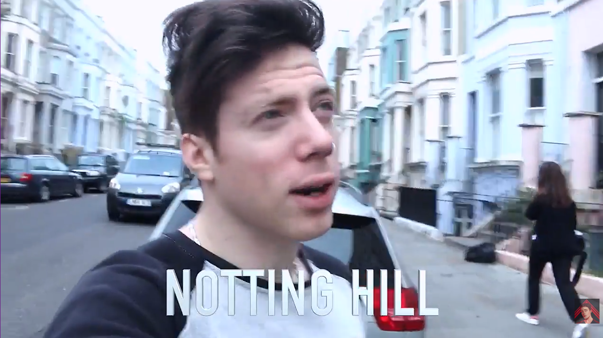
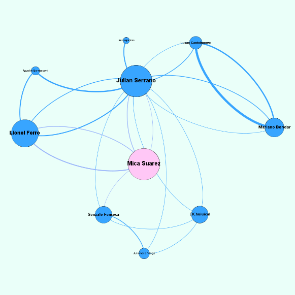
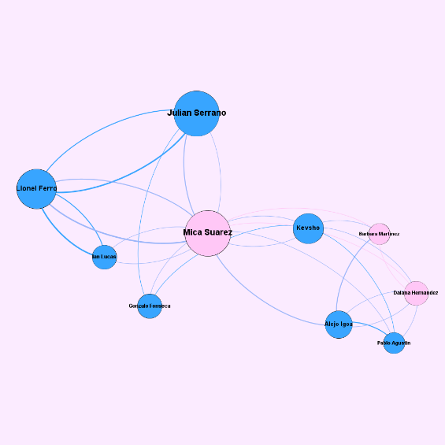
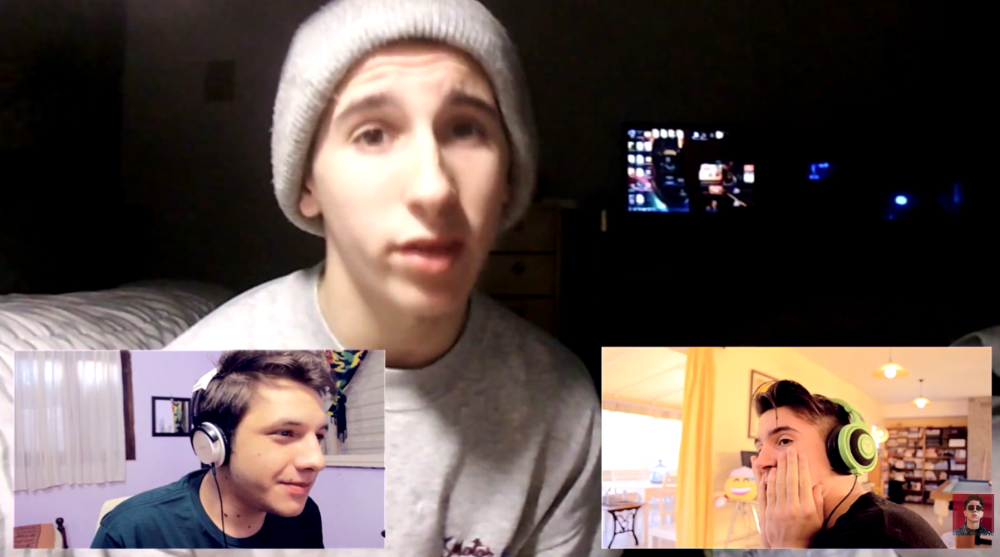
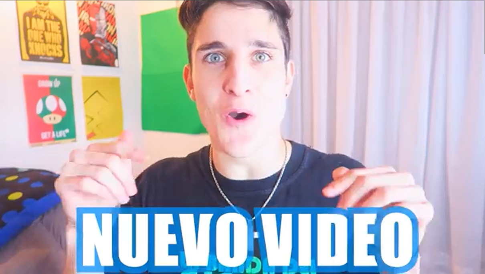

6 Trayectorias identitarias en el videoblog juvenil
6.1 Del análisis categorial a las trayectorias situadas
El capítulo anterior reveló las dimensiones constitutivas de la construcción identitaria juvenil en YouTube: los índices de glocalidad, cercanía parasocial, autenticidad performativa y extimidad configuran perfiles diferenciados, pero interrelacionados. Sin embargo, esas categorías analíticas capturan momentos de un proceso que es siempre dinámico. Las identidades juveniles en el videoblog son trayectorias en constante reconfiguración, negociadas en la intersección entre las posibilidades técnicas de la plataforma, las demandas del mercado de atención y las búsquedas expresivas de sus protagonistas.
Este capítulo propone un desplazamiento metodológico desde el análisis categorial hacia la reconstrucción de trayectorias identitarias situadas. A las herramientas desarrolladas —los índices cuantitativos mantienen su valor heurístico—, se suman ahora articularlas con una perspectiva procesual que restituya el carácter emergente de estas construcciones identitarias. Como señala Palazzo (2010), el ciberdiscurso juvenil se caracteriza precisamente por su plasticidad, por su capacidad de reconfiguración constante en respuesta a las dinámicas del entorno digital.
La noción de trayectoria que empleamos procede de la sociología bourdieuana, pero la reformulamos para el contexto digital. Si para Bourdieu (2000) la trayectoria social implica el desplazamiento en el espacio social a través del tiempo, mediado por el habitus y el capital disponible, en YouTube estas trayectorias se despliegan en un espacio híbrido donde convergen lógicas mediáticas, comerciales y comunitarias. Los youtubers de nuestro corpus no solo “ocupan” posiciones en este campo; las construyen performativamente a través de cada video, cada colaboración, cada gesto de autenticidad escenificada.
El análisis combina dos aproximaciones complementarias. Por un lado, reconstruimos las trayectorias individuales de los ocho creadores nucleares del corpus, mostrando cómo cada uno negocia de manera singular las tensiones entre lo local y lo global, entre la autenticidad y la performance, entre la cercanía y la profesionalización. Por otro, mediante técnicas de análisis de redes sociales, mapeamos las relaciones que estos creadores establecen entre sí, identificando comunidades de práctica, posiciones de centralidad y dinámicas de influencia mutua. Esta doble entrada —biográfica y relacional— nos permite comprender el videoblog juvenil no como una colección de canales individuales, sino como un verdadero “espacio social practicado” (Mayans i Planells, 2002), donde las identidades se construyen relacionalmente, en diálogo constante con pares, audiencias y las propias affordances de la plataforma.
6.2 La estructura de la red
Para comprender cómo circulan el prestigio y la legitimidad en el videoblog argentino, sometimos el corpus nuclear a un Análisis de Redes Sociales (ARS). Este análisis mostró que no se trata de una comunidad homogénea o democrática. La topología resultante revela un campo profundamente fragmentado en sub-comunidades.
La red extendida, compuesta por 20 creadores (nodos) y 48 vínculos de colaboración (aristas), presenta lo que técnicamente se denomina una densidad estructural baja (0.174). En términos prácticos, esto significa que, de todas las conexiones posibles que podrían existir entre estos creadores, ocurren muy pocas. El ecosistema se parece menos a un tejido social unificado y más a un archipiélago de islas desconectadas entre sí.
![Red extendida de YouTubers Argentinos ]
Esta fragmentación, sin embargo, no es azarosa, sino que obedece a un comportamiento tribal. El alto índice de modularidad (0.493) confirma que la sociabilidad se organiza en “burbujas” o comunidades muy unidas con fronteras fuertemente marcadas. Dicho de otro modo: los youtubers colaboran intensamente hacia el interior de sus propios grupos de afinidad, pero casi nunca cruzan esa frontera para crear contenido con miembros de otras “tribus”.
A su vez, la probabilidad de que los aliados de un youtuber colaboren también entre sí es alta (lo que se refleja en un coeficiente de clustering de 0.377). Esto delata una clara lógica de clausura grupal, muy similar a la dinámica social de que “el amigo de mi amigo también es mi amigo”: se interactúa y se colabora casi exclusivamente con los cercanos para compartir audiencias y reforzar el capital simbólico hacia el interior del grupo, sin dispersarlo hacia afuera.

| Youtuber | PageRank | Betweenness | Hub Score | InDegree | OutDegree |
|---|---|---|---|---|---|
| Julián Serrano | 0.0713 | 0.2220 | 0.8101 | 9 | 43 |
| Lionel Ferro | 0.0657 | 0.0538 | 0.0407 | 11 | 12 |
| Mica Suárez | 0.0545 | 0.1867 | 0.0294 | 7 | 10 |
| Mariano Bondar | 0.0542 | 0.0000 | 0.0242 | 6 | 11 |
| Lucas Castel | 0.0524 | 0.0000 | 0.0243 | 8 | 6 |
| Gonzalo Goette | 0.0444 | 0.0234 | 0.0219 | 4 | 13 |
| Gonzalo Fonseca | 0.0337 | 0.0363 | 0.0040 | 3 | 5 |
| Elchuiuical | 0.0293 | 0.0532 | 0.0009 | 2 | 4 |
6.2.1 Centralidades y periferias
El análisis de las posiciones individuales desarticula una presunción habitual del sentido común digital: la equivalencia entre la popularidad de audiencia (cantidad de vistas o suscriptores) y el poder estructural (peso e influencia real dentro de la red de pares). Los datos muestran una disociación nítida entre dos tipos de capital: ser famoso para el público no significa, necesariamente, ser un líder dentro de la comunidad de creadores.
Julián Serrano emerge como el hub indiscutible del sistema —el centro de gravedad de la red—, con los valores máximos tanto en conexiones directas o colaboraciones efectivas (una medida conocida como Grado: 0.52), como en su capacidad de intermediación (Betweenness: 0.515). Su alto índice de PageRank (0.176) —una métrica que evalúa la calidad y no solo la cantidad de los vínculos— indica que Serrano no solo conoce a muchos, sino que conoce a los “importantes”. Colaborar con él no es solo sumar reproducciones; es recibir un baño de legitimidad sistémica. Funciona como el conector universal indispensable, la pieza clave para mantener unidas a las distintas tribus del campo que, de otro modo, no dialogarían entre sí.
En el polo opuesto está Lucas Castel: uno de los youtubers con mayor audiencia bruta del período, pero situado en una posición estructuralmente periférica en la red de pares (con apenas 2 conexiones registradas). Su estrategia de crecimiento es solipsista, es decir, funciona como un actor solitario desconectado del tejido comunitario central. Esta anomalía es sumamente reveladora: sugiere que es perfectamente posible acumular un inmenso capital de audiencia sin participar de la “vida social” del campo, validando una trayectoria de autenticidad barrial que prescinde por completo de la aprobación de la élite de creadores.
Entre estos dos extremos, Mica Suárez y Lionel Ferro desempeñan roles de articulación muy específicos. Suárez, con una alta centralidad de grado (0.39, lo que se traduce en una gran cantidad de vínculos directos), lidera la comunidad más densa y colaborativa de la red, funcionando como el núcleo aglutinador de su propio grupo. Ferro, por su parte, opera como un puente selectivo (reflejado en su nivel de Betweenness: 0.225): no busca conectar a todos con todos, sino que enlaza el ecosistema local con mercados internacionales o nichos específicos. Actúa, de esta manera, como una bisagra estratégica orientada hacia la profesionalización global.
6.2.2 Cuatro lógicas de asociación
Para mapear con precisión estas fronteras invisibles, aplicamos el algoritmo de detección de comunidades de Louvain. A diferencia de otros métodos que imponen divisiones preestablecidas de arriba hacia abajo, este enfoque computacional “lee” la topología natural de la red con el objetivo de maximizar su modularidad. En términos más coloquiales, el algoritmo actúa como un sociólogo observando una reunión inmensa: comienza evaluando a cada creador de manera individual y luego los agrupa paso a paso, buscando que la densidad de las conexiones (las colaboraciones) sea significativamente mayor hacia el interior de ese pequeño grupo que hacia el resto de la red. Si un youtuber colabora más intensamente con una célula específica, el algoritmo lo integra allí para fortalecer la cohesión local, y repite este proceso hasta que cualquier movimiento adicional debilitaría los lazos del conjunto.
A través de este rastreo orgánico de las afinidades y las interacciones, el modelo nos permitió identificar de manera concluyente la consolidación de cuatro “tribus” principales que organizan la sociabilidad del campo. Cada una de estas comunidades representa un ecosistema propio, habitado y regido por una lógica de producción, circulación de prestigio y validación simbólica completamente distinta.
El “Clan Serrano” (Comunidad 0) se rige por una lógica afectiva. Sus integrantes —Oriana Sabatini, familiares, amigos íntimos— orbitan casi exclusivamente alrededor de la estrella principal. La colaboración es una extensión de la intimidad offline; se colabora por afecto o parentesco, reforzando el círculo de confianza personal.
La Isla de los Populares (Comunidad 1) tiene la paradoja de estar conformada por Lucas Castel y Mariano Bondar: dos gigantes de audiencia que forman una isla desconectada del resto. Su aislamiento sugiere que su capital simbólico es autosuficiente: no necesitan “pedir prestada” audiencia a otros grupos porque ya poseen la atención masiva.
La Comunidad Vlogger/Lifestyle (Comunidad 2) es la “clase media” pujante de YouTube, vertebrada por Mica Suárez. Es la agrupación más extensa y diversa, donde la colaboración cruzada funciona como motor de crecimiento mutuo. A diferencia del Clan Serrano (cerrado) o la Isla de Castel (aislada), esta comunidad practica una solidaridad horizontal típica de la cultura vlogger clásica: crecemos juntos colaborando.
El Grupo Global/Comercial (Comunidad 3) está encabezado por Lionel Ferro. Aquí las conexiones responden a una afinidad de mercado y estilo: profesionalizaciones agresivas, estéticas televisivas y proyección transnacional. La colaboración no es afectiva ni solidaria, sino estratégica: se une capital con capital para expandir mercados.
Esta cartografía demuestra que el “espacio social practicado” de YouTube no es un territorio liso, sino un campo de batalla estructurado por lógicas divergentes —el afecto, la masa, la colaboración y el mercado— que coexisten en tensión permanente. Elchuiuical, desde la periferia de la red (apenas 2 conexiones), lo formula con la lucidez desesperada de quien habla desde el margen:
“Esto yo lo hago por diversión. Y quiero que también ustedes se diviertan, no creo que miren los videos por obligación. Así que eso, muchas gracias por estar. Desde el principio, los que están desde el principio. Los que llegan cada día, muchas gracias. Y vamos a ver si estamos hasta el final. Adiós. Adiós, dije. ¡Cortá!” (VID 63, 3:57-4:15)
El doble “adiós” y el “cortá” dirigido al camarógrafo revelan que, incluso en uno de los videos más sinceros del corpus, el cierre conserva su carácter de performance: la despedida se hace y luego se comenta, se rompe la cuarta pared por segunda vez.
6.3 Trayectorias identitarias individuales
A continuación reconstruimos las trayectorias de los ocho creadores nucleares del corpus, integrando sus coordenadas biográficas, su posición en la red y la materialidad multimodal de su performance. Lejos de ser perfiles estáticos, estos casos ilustran cómo los índices abstractos (IGL, ICP, IAP) se encarnan en gestos, espacios y decisiones de montaje específicos.
6.3.1 Lucas Castel: la estética del desborde y la autenticidad barrial
Lucas Castelnuovo (San Justo, Buenos Aires, 1996). Inició su canal en 2012, consolidándose como uno de los primeros referentes masivos del humor costumbrista y la narrativa adolescente.
La trayectoria de Lucas Castel encarna la paradoja del éxito solipsista. Pese a acumular una de las audiencias más masivas del período, su posición en la red nuclear es marginal (apenas 2 conexiones), configurando una “isla” estructural. Esta desconexión de la élite vlogger se compensa mediante una inversión radical en la intensidad del vínculo vertical con su audiencia, sostenida por una estrategia multimodal de saturación expresiva.
Sus índices confirman esta apuesta: ostenta el IMP más alto del corpus (4.55), que encuentra su correlato físico en una corporalidad desatada. Castel no habla; grita, salta y gesticula con una amplitud que desborda el encuadre. Esta gestualidad hiperbólica —brazos abiertos, acercamientos bruscos a la lente, risas explosivas— funciona como un marcador de vitalidad barrial que rompe la “cuarta pared” por pura fuerza cinética. Su cuerpo no está disciplinado para la cámara (como el de Ferro), sino que la invade, generando una sensación de presencia física ineludible.
La evolución de su registro queda plasmada en el contraste entre sus producciones tempranas y tardías. En “Especial de Halloween” (2012), su primer video del corpus, Castel se posiciona con una informalidad barrial radical:
«Bienvenidos amigos, ¿cómo están? Hoy es 31 de Octubre, Halloween, una fecha en la que en otros países los chicos van disfrazados a tocar timbres a las casas para pedir dulces. Pero acá en la Argentina la gente mayor no tiene idea de lo que es Halloween. Seguramente vos vas y tocás ahora un timbre y te esperan con un arma.» (0:14-0:29)
El deíctico «acá en la Argentina», el voseo enfático («vos vas y tocás»), la hipérbole cotidiana («te esperan con un arma»): todos estos recursos construyen una proxémica de la complicidad barrial donde la audiencia es un par del barrio. Cuatro años después, en “Vlog viaje secreto a Londres” (2016), el mismo Castel conserva la informalidad, pero la reconfigura dentro de un marco profesional:
«Bienvenidos amigos, ¿cómo están? Es muy temprano, se notan las ojeras que tengo, miren las ojeras estas, por favor. Pude dormir 3 horas, pero ahora me encuentro en el aeropuerto, estoy muy contento porque me llegó una noticia de YouTube […].» (0:14-0:22)
El saludo ritual se mantiene («Bienvenidos amigos»), pero el escenario migra del barrio al aeropuerto internacional. La vulnerabilidad corporal («las ojeras estas, por favor») desplaza al humor de confrontación callejera. YouTube deja de ser un contexto tácito para convertirse en interlocutor institucional explícito. La evolución discursiva es la trayectoria misma: del cuarto adolescente al check-in de un creador globalizado que, sin embargo, sigue tuteando a su audiencia.
Espacialmente, Castel construye su autenticidad mediante una poética del desorden doméstico: su habitación no es un set, sino un cuarto adolescente real, con postergaciones y caos visible. Su trayectoria muestra, además, una evolución espacial significativa: el tránsito desde el encierro del dormitorio hacia la “calle” como escenario de validación. Cuando filma en la vía pública, la cámara en mano y el encuadre inestable no son errores técnicos, sino recursos de verosimilitud documental. Esta “estética de lo amateur” —cortes abruptos, audios saturados— refuerza su IAP (6.96): la desprolijidad es la garantía de que “esto es verdad”. Aunque su IGL cercano al neutro (0.08) sugiere cierta estandarización temática, su performance multimodal lo re-territorializa constantemente: el acento, el cuerpo que ocupa espacio y la estética visual “sucia” lo anclan inequívocamente en la cultura juvenil argentina popular.


6.3.2 Julián Serrano: la proxémica de la seducción y el cuerpo como capital
Julián Serrano (Paraná, Entre Ríos, 1993). Comenzó en 2009 con vlogs caseros y alcanzó el estrellato nacional con su paso a la televisión (Aliados). Es el arquetipo del ídolo teen digital.
Serrano ocupa el centro neurálgico del sistema (máxima centralidad de intermediación) y funciona como el gran legitimador del campo. Su perfil cuantitativo es el de un seductor estratégico: posee el ICP más alto del corpus (5.78), un logro que se construye fundamentalmente mediante una gestión sofisticada de la proxémica digital.
A diferencia de la explosión caótica de Castel, Serrano domina el arte de la mirada. Su recurso multimodal distintivo es el contacto visual sostenido a cámara —planos medios o primeros planos donde mira directamente al lente, simulando una intimidad exclusiva. Esta estrategia visual se complementa con una gestión del cuerpo que explota sistemáticamente la semi-desnudez. Su IEX elevado (5.42) se materializa en la aparición recurrente sin remera o en ropa interior, transformando su piel en una superficie de inscripción para el deseo de la audiencia. Esta exhibición no es meramente narcisista: funciona como una tecnología de confianza: “me muestro vulnerable (desnudo) porque confío en ustedes”.
La metamorfosis discursiva de Serrano es, quizás, la más pronunciada del corpus. En “FILOSOFANDO (?)” (2012), un Serrano de diecinueve años performa el descontrol como identidad:
«Hola gente cómo están, son las 8 de la mañana, no que bueno son como las 9 y les voy a contar una historia muy entretenida […] un verga que está martillando hoy desde las 7, escuchan el martilleo, es lo que falta para que mi vida sea una mierda ya de entrada.» (0:06-0:25)
La oralidad caótica, la autocorrección no editada («son las 8, no que bueno son como las 9»), la anticortesía como vínculo («una mierda», «un verga»): todo construye un ethos de espontaneidad transgresora. Cuatro años después, en “Viaje a México con otros creadores” (2016), el mismo Serrano ya habita otro registro:
«Bueno, ya hice la aduana, a ver si puedo grabar en Estados Unidos de fondo. Estoy solo, son las 4 de la mañana. Vengo de Miami a México. […] Bueno, Castel empezó a grabar y me hizo recordar que yo también tenía que grabar. Estamos todos grabando.» (0:00-0:32)
Desaparecen los improperios y emerge el léxico profesional de la «economía de creadores»: aduana, grabar, contenido, equipo. La referencia a Castel como par profesional sustituye la sociabilidad callejera por la colegialidad del oficio. La transición lingüística es la transición identitaria: del rebelde irónico al emprendedor cosmopolita.
Su IGL negativo (-0.24) refuerza esta operación desde lo lingüístico y cultural. Corporalmente mantiene una gestualidad relajada y un manejo del espacio que oscila entre la cama (espacio de confesión/seducción) y el evento masivo (espacio de consagración). Las “borrascas” filmadas o los momentos de caos con amigos operan como contrapuntos de autenticidad que humanizan al ídolo: el cuerpo perfecto también se descontrola, validando el pacto de cercanía. En Serrano, el cuerpo no es solo soporte, es capital político.

6.3.3 Mica Suárez: la intimidad del cuarto propio y la resistencia estética
Micaela Suárez (Río Gallegos/Buenos Aires, 1996). Inició su actividad en grupos de Facebook antes de migrar a YouTube en 2011. Es la referente femenina indiscutida del vlogging narrativo y actoral.
En un ecosistema estructuralmente masculinizado, la trayectoria de Mica Suárez destaca por su capacidad para construir infraestructura comunitaria desde una posición de resistencia estética. Su liderazgo en la red (segunda mayor centralidad de grado) se sostiene sobre un perfil métrico equilibrado que rechaza los excesos performáticos de sus pares varones. Su IGL negativo (-0.52) evidencia un fuerte anclaje en la cultura local: Mica no busca la neutralidad global, sino que narra la experiencia de ser joven en Argentina, utilizando códigos de humor y referencia que interpelan a una audiencia situada.
Su rasgo multimodal más distintivo es la construcción de una estética anti-glamour. Mientras la norma para las youtubers mujeres de la época tendía hacia el tutorial de belleza y la perfección visual, Mica construye su autenticidad (IAP 7.68) mediante la exhibición deliberada de la imperfección: sin maquillaje, con ropa holgada y bandanas, habitando un dormitorio visiblemente desordenado. Este “cuarto propio” desprolijo funciona como un refugio de autenticidad frente a las demandas de la feminidad hegemónica.
La voz de Mica es la que más consistentemente performa la cercanía desjerarquizada. En “50 cosas sobre mí” (2015), su apertura explicita la autoconciencia comunitaria:
«Hola Iutub, como habrán visto en el título del video, hoy voy a hacer un tag. Ya sé que el 50 cosas sobre mí ya lo hicieron todos los youtubers. De hecho creo que 9 de cada 10 youtubers lo hicieron. Pero nada, yo lo quería hacer porque no me quería quedar con las ganas. Creo que soy la única pelotuda que no lo hizo.» (0:03-0:19)
La autodescripción como «la única pelotuda» combina autocrítica humorística con reivindicación de agencia: hace el video porque quiere, no porque la tendencia la presione. La anticortesía autodirigida funciona como marcador de autenticidad femenina que se distancia del registro aspiracional de las beauty vloggers. En su video “Sorpresa a ustedes” (2016), al alcanzar los 100.000 suscriptores, el registro se desplaza hacia el asombro genuino:
«¿Sabés lo que es entrar a la computadora, abrir mi canal y ver esto? ¿Sabés lo que es ver estos fucking números? Cien mil personas se suscribieron a mi canal. Cien mil personas saben de mi existencia.» (0:25-0:48)
La repetición anafórica de «¿Sabés lo que es…?» interpela a la audiencia como confidente de una emoción que la desborda. El anglicismo fucking opera como intensificador de asombro, no como insulto, y el salto de «mi canal» a «mi existencia» revela la fusión entre identidad personal e identidad digital que caracteriza la extimidad del corpus.
Corporalmente, su estrategia difiere de la de Serrano. Aunque posee un IEX considerable (4.59), este no se basa en la exhibición de piel, sino en la proxémica de la confidencia: el plano medio corto para hablar a la cámara como quien habla a una amiga, evitando activamente la hipersexualización. Su IMP (3.18), superior al promedio del corpus para youtubers de contenido conversacional, valida la emocionalidad y la vulnerabilidad como insumos narrativos legítimos, pero siempre desde una gestión corporal que protege su integridad. Esta “sororidad digital” la convierte en el nodo de confianza del sistema.


6.3.4 Lionel Ferro: el cuerpo disciplinado y la asepsia transnacional
Lionel Ferro (Córdoba, 1995). Actor, músico y creador de contenido. Su carrera se consolidó con su participación en Soy Luna (Disney), marcando el cruce definitivo entre YouTube y la industria televisiva global.
Si Mica Suárez habita el desorden vital, Lionel Ferro encarna la disciplina profesional. Es el único youtuber del corpus con un IGL claramente positivo (0.52), lo que refleja cuantitativamente su esfuerzo por desterritorializar su identidad. Su estrategia multimodal consiste en borrar las huellas del origen: neutraliza su acento cordobés y limpia su entorno visual de referencias locales específicas.
Esta “limpieza” se extiende a su gestión corporal. Su IMP (3.46) es moderado, lo que se traduce en una performance contenida, gestualmente pulcra y apta para el estándar brand-safe de Disney Channel. Ferro no grita ni desborda el encuadre: su cuerpo es un instrumento afinado para la cámara, siempre bien iluminado, vestido con indumentaria genérica de moda global y ubicado en espacios que parecen sets de televisión más que habitaciones reales.
Paradójicamente, su IAP es el más alto del corpus (8.23). ¿Cómo se explica esta autenticidad en alguien tan producido? La respuesta reside en la transparencia productiva: Ferro no finge ser un amigo íntimo en pijama (su ICP de 4.12 es moderado, confirmando la distancia aspiracional), sino que se presenta honestamente como un profesional del entretenimiento. Muestra el micrófono, habla de la edición y tematiza su trabajo como creador. En Ferro, la identidad deja de ser una exploración vivencial para convertirse en una marca gestionada con rigor editorial. Su autenticidad no reside en la espontaneidad simulada, sino en no ocultar la maquinaria de la industria.
6.3.5 Gonzalo Goette: el cuerpo en riesgo y la autenticidad del conflicto
Gonzalo Goette (Buenos Aires, 1996). Emergido en la segunda ola de youtubers (2015), se especializó en el formato de bromas callejeras (pranks) y experimentos sociales, llevando la cámara del cuarto a la calle.
La trayectoria de Goette introduce una ruptura espacial radical: el abandono del refugio doméstico por la intemperie del espacio público. Su perfil métrico es, a primera vista, paradójico: tiene el IAP más elevado del corpus (8.04) a pesar de registrar la extimidad más baja (IEX 2.97) y el IMP más bajo (1.93). Esta configuración confirma que su autenticidad no proviene de la confesión emocional ni de la apertura de su intimidad —que permanecen vedadas—, sino de la “verdad” del riesgo físico.
Multimodalmente, Goette construye su identidad mediante una estética de la interrupción. Sus videos no ocurren en lugares de permanencia, sino en “no-lugares” de tránsito —subtes, plazas, veredas concurridas— donde su cuerpo funciona no como objeto de exhibición, sino como instrumento de provocación. La cámara adopta la lógica de la cámara oculta: es un testigo voyeurista que captura la reacción genuina —el enojo, la sorpresa, el rechazo— de terceros desprevenidos.
Esta dinámica impone una proxémica de la invasión: Goette rompe las distancias sociales aceptables, tocando, increpando o incomodando a desconocidos. Un video de 2015 lo muestra interpelando a transeuntes directamente: «Hola gente, hoy vamos a jugar beso o patada de los huevos. Pero no va a ser una patada despacito. Va a ser una patada bien bien potente.» El juego de palabras y la escalada amenazante son formulaicos en su lógica, pero la detonación real varía: el público ríe porque la víctima consienta el riesgo. La “broma” escala en intensidad hasta la posibilidad latente de violencia real, que es precisamente lo que valida su contenido.
En otro video del mismo año, del tipo “experimento social”, plantea el dilema ético con una extrañeza que también es su marca: «Bueno gente, hoy trajimos una billetera con 300 pesos. Vamos a hacer como que se nos cae y vamos a ver quién devuelve y quién no. Lo vamos a hacer con todo tipo y clase social de personas.» Esta mixtura entre la broma y el ensayo social —la invasividad como metodología— define su competencia cibercomunicativa específica: no necesita confesar nada de sí mismo para ser auténtico; le alcanza con ser el catalizador de situaciones que la audiencia no puede anticipar.
Su IGL livianamente positivo (0.16) sugiere que, aunque opera en la “selva de cemento” local, el lenguaje del prank es una marca visual global que no requiere traducción cultural compleja. Goette es un catalizador de situaciones: su identidad se define por la audacia de salir al mundo y chocar contra él.
6.3.6 Mariano Bondar: la estética del contraste y la inestabilidad como verdad
Mariano Bondar (Buenos Aires, 1996). Creador que transita entre el humor absurdo y la reflexión existencial. Su libro “Uno igual al resto” (2016) consolidó su perfil introspectivo.
Si Goette busca la verdad afuera, Bondar la busca adentro, y lo hace mediante una poética de la oscilación. Su perfil métrico revela una tensión fascinante: combina una Cercanía Parasocial alta (3.75) con una Extimidad (3.77) que opera por picos de intensidad. Su IGL profundamente negativo (-0.96) lo ancla en códigos culturales locales, pero su rasgo distintivo es una autenticidad (IAP 7.27) que se sostiene, paradójicamente, en su inestabilidad.
Multimodalmente, Bondar construye dos regímenes visuales opuestos que conviven sin transición en su canal. El “Bondar oscuro”: videos de confesión caracterizados por iluminación mínima, planos fijos cerrados en primeros planos extremos del rostro y una voz monocorde, casi susurrada. En estos momentos, la ausencia de música y edición frenética funciona como marcador de “desnudez psíquica”. Y el “Bondar maníaco”: videos de humor físico donde la estética se invierte radicalmente hacia la sobreiluminación, los planos erráticos, los gritos y una edición acelerada llena de efectos. Esta yuxtaposición de estados —un video titulado “NO PUEDO MÁS” seguido inmediatamente por “LA JODA MÁS ÉPICA”— no se penaliza como incoherencia, sino que se valora como una mímesis de la experiencia emocional juvenil. Bondar no edita su bipolaridad performática para hacerla digerible; la exhibe como su marca de agua.
La evolución de Bondar ofrece, además, uno de los ejemplos más claros de maduración discursiva en el corpus. Su primer video, “Música, modas, Justino Bivero…” (2012), abre con una retórica de la confrontación:
«Esta vez volví para hablarles de un tema que me está rompiendo bastante las pelotas últimamente. Hablar de esto me puede traer muchos problemas como que me caen a puteadas y no estén a favor de lo que digo. Pero bueno, yo voy a hacerlo igual porque tengo ganas de hablar de este tema.» (0:00-0:12)
El gesto es confrontativo, pero genérico: un joven indignado que opina sobre tendencias culturales, con la anticortesía como seña de autenticidad. Cuatro años después, en “Cómo superé la muerte de mi amigo” (2016), la voz ha cambiado profundamente:
«Hola, ¿cómo están? Hace mucho tiempo que tengo ganas de hacer este video y bueno, recientemente no me he estado sintiendo muy bien. […] No tengo idea cuándo subir este video, no tengo idea siquiera si voy a avisar que voy a subir este video, pero es algo que tengo muchas ganas de compartir hace tiempo. Yo no creo ser ni el más específico, ni el que te puede dar un mejor consuelo […]. Te voy a contar algo que me pasó a mí.» (0:05-0:49)
La oralidad se ha desacelerado, las muletillas agresivas desaparecen, emerge un «yo» vulnerable que negocia explícitamente los límites de su intimidad con la audiencia («no tengo idea cuándo subir», «no creo ser»). La trayectoria de Bondar no va del amateurismo a la profesionalización como la de Ferro, sino de la opinión al testimonio: del yo que increpa al yo que se expone.

6.3.7 Gonzalo Fonseca: la ética del low-fi y la resistencia local
Gonzalo Fonseca (Buenos Aires, 1994). Veterano de la plataforma (inicios en 2010), cultiva un estilo de vlogging clásico, centrado en la comedia observacional y la vida cotidiana.
Mientras que Lionel Ferro representa una aspiración a lo global, Gonzalo Fonseca se mueve, sobre todo, dentro de lo local. Su IGL más bajo de todo el corpus (-1.16) marca una identidad territorializada al extremo: rechaza la neutralización dialectal, sus temas y referencias son principalmente argentinos, lo que deviene en una comunidad de sentido anclada en la experiencia barrial compartida.
Esta postura se materializa multimodalmente en una estética deliberadamente low-fi: títulos hechos en Paint con escritura a mano alzada, transiciones abruptas, iluminación inconsistente. Esta “desprolijidad” no es incompetencia técnica, sino una decisión ética que refuerza su IAP (7.30): la falta de pulimento es la garantía de que no ha sido cooptado por la lógica industrial. Corporalmente construye una antiheroicidad de lo cotidiano: aparece “todo mojado” sin explicación, se mueve erráticamente en una silla con rueditas, gesticula con una torpeza calculada.
En “CUMPLO TODOS MIS SUEÑOS” (VID 25), Fonseca verbaliza su relación con el crecimiento del canal con un asombro que ningún otro youtuber del corpus formula con tanta desnudez:
“Es increíble que ya casi tenga 150 mil suscriptores. No lo puedo creer. Hay veces que miro el numerito ese y digo, ¿en serio es mi canal ese? Ese es el canal que yo tenía 300 suscriptores y ahora tiene ese número. Y a veces no lo puedo creer. Pero vamos por más, y eso es lo peor: cuanto más tengo, menos lo puedo creer.” (VID 25, 2:38-2:50)
La frase “cuanto más tengo, menos lo puedo creer” condensa algo que ningún indicador cuantitativo captura: la perplejidad del joven que creó algo que lo excede. A diferencia de Castel o Serrano, que narran su crecimiento como trayectoria natural, Fonseca lo narra como anomalía. Su trayectoria es la de la fidelidad al origen: mientras el ecosistema se profesionaliza, Fonseca performa la permanencia, convirtiéndose en una reserva de autenticidad clásica para una audiencia que valora la honestidad sobre el espectáculo.
6.3.8 Elchuiuical (Julián Iurchuk): la estética del desborde y el glitch identitario
Julián Iurchuk (Bahía Blanca, 1996). Conocido como “Elchuiucal”, irrumpió desde el interior de la provincia de Buenos Aires con un estilo de edición frenética y humor absurdo que rompió con la narrativa lineal del vlog tradicional.
La trayectoria de Elchuiucal introduce la lógica del experimentalismo formal. Su perfil métrico presenta una paradoja aparente: combina una Extimidad considerable (4.73) con un IMP bajo (2.84). Sin embargo, esta “baja” pasión se explica multimodalmente: su intensidad no es afectiva (drama, llanto) sino sensorial. Elchuiucal construye identidad mediante la saturación de estímulos visuales, gritos, distorsión de audio y cambios abruptos de registro que impiden la contemplación pasiva.
Su IGL neutro (-0.08) esconde una operación compleja: no es que sea “menos argentino”, sino que su argentinidad está “glitcheada”, distorsionada hasta la parodia mediante el uso de memes oscuros y referencias locales (barrios de Bahía Blanca) mezcladas con cultura pop global. Espacialmente, su dormitorio funciona como un laboratorio del caos: decorado con pósters de Marvel y Nintendo —anclas de “normalidad geek”—, se convierte en el escenario de performances extremas donde la narrativa se disuelve en el absurdo.
La voz de Elchuiucal es particularmente elocuente en sus videos de autopresentación. En “50 cosas sobre mí” (2016), comienza con una declaración que sintetiza su estética: «Bien gente, están acá de vuelta en un nuevo video. Se supone que les voy a contar 50 cosas sobre mí. Las cuales yo no sé, porque no sé 50 cosas sobre mí. Así que estuve buscando en Wikipedia.» La cita condensa su operación de identidad: la autopresentación como búsqueda absurda, la autoironía como método, la Wikipedia como fuente de la propia biografía. Más adelante explica su origen —«Vivo en Bahía Blanca, que no es un pueblo, hay wifi»— con el mismo humor que revela y esconde al mismo tiempo: la información real envuelta en un chiste.
Esta retorsión sobre sí mismo como personaje del video, que Elchuiucal practica sistemáticamente, prefigura el modo en que las plataformas de video breve trabajarán años después: la autoconciencia del código como el código mismo. Su IAP (7.66) no reside en la coherencia biográfica, sino en la fidelidad al nonsense como estética: Elchuiucal no narra una vida; estalla en fragmentos.

6.4 Patrones emergentes
El análisis comparativo de las ocho trayectorias individuales permite trascender la idiosincrasia biográfica para identificar las lógicas estructurales que organizan el campo. Al sistematizar estos recorridos, encontramos una tensión productiva entre la tipología teórica —construida desde el análisis interpretativo de las narrativas (“quién dice ser el sujeto”)— y los clusters empíricos emergentes del análisis estadístico multivariable (“qué intensidades practica realmente”).
Lejos de ser una inconsistencia, esta no-coincidencia revela la complejidad del fenómeno identitario: los youtubers no “pertenecen” a una categoría estanca, sino que transitan entre repertorios disponibles. El caso de Lucas Castel ilustra esta riqueza: teóricamente encarna al “Popular Auténtico”, pero empíricamente oscila entre clusters de “Íntimo-Local” y “Cercano-Extímico” según la necesidad estratégica del video. La identidad digital reside precisamente en ese intersticio: es la negociación constante entre la coherencia narrativa del yo y la variabilidad performática que exige el algoritmo.
6.4.1 Trayectorias de profesionalización
La tensión entre el amateurismo fundacional del género y la inevitable profesionalización del medio constituye el primer eje estructurante. Como ha señalado Dijck (2013), la lógica de la plataforma empuja inexorablemente hacia la mercantilización de la creatividad, convirtiendo la expresión personal en contenido con potencial publicitario y cuantificando el valor social mediante métricas de interacción. Los creadores del corpus negocian esta tensión desde posiciones diferenciadas. Las trayectorias se bifurcan en tres modalidades.
La profesionalización transparente encarnada por Lionel Ferro: asume abiertamente la transformación del hobby en trabajo. La autenticidad no se construye negando lo comercial, sino exhibiendo la “cocina” de la producción; la mejora técnica se narra como una forma de respeto a la audiencia. La resistencia artesanal practicada por Gonzalo Fonseca y en parte por Lucas Castel: mantienen deliberadamente elementos de producción low-fi como marcadores de fidelidad al origen. Y la profesionalización selectiva como la de Julián Serrano y Mica Suárez: adoptan estándares televisivos en la imagen, pero conservan la intimidad doméstica del dormitorio como escenario, hibridando la calidad del medio masivo con la calidez del medio digital.
6.4.2 Trayectorias de localización
La segunda tensión refiere a la administración de la identidad territorial en una plataforma global. La hiperlocalización identitaria de Castel o Fonseca convierte la “argentinidad” en una ventaja competitiva que genera engagement intenso, aunque limite el alcance transnacional. La neutralización estratégica de Ferro elimina marcadores dialectales para maximizar la inteligibilidad global, pagando el costo de un menor arraigo comunitario local. Y la glocalización dinámica de Serrano o Goette demuestra una competencia comunicativa sofisticada para modular el registro: activan códigos locales para la base de fans y códigos globales para el formato (prank, challenge), navegando las escalas geográficas sin perder verosimilitud.
6.4.3 Trayectorias de género
El género opera como variable moduladora decisiva. El corpus evidencia una pluralidad de masculinidades que rompe con el modelo monolítico: conviven la masculinidad popular-barrial (Castel), la seductora-ambigua (Serrano), la sensible-vulnerable (Bondar) y la profesional-neutra (Ferro). Esta diversidad sugiere que YouTube funcionó, en este período, como un espacio de experimentación para identidades masculinas que integran la afectividad y la exposición corporal de modos no vistos hasta entonces.
En contrapartida, la trayectoria de Mica Suárez ilustra la construcción de una feminidad resistente. Como única mujer del núcleo central, su estrategia no pasa por la hipersexualización ni la sumisión a los estereotipos de belleza, sino por la intelectualización del humor y la construcción de una “estética del cuarto propio” desordenado. Su éxito demuestra que la sororidad digital y la autenticidad “anti-glamour” operan como tecnologías de posicionamiento eficaces en un campo masculinizado.
6.5 Síntesis: el videoblog como taller de identidades
Los youtubers analizados “muestran quiénes son” ante una cámara; pero también construyen y devienen quiénes son a través de la práctica iterativa y sostenida del vlogging, fuertemente marcada por la retroalimentación del público. La identidad emerge como un efecto de la práctica reiterada de la construcción de narrativas audiovisuales en esta plataforma.
Las trayectorias analizadas sugieren que la identidad del youtuber se define, fundamentalmente, por su carácter dinámico y situado. Esta construcción emerge de la integración de diversos factores que se solapan de manera constante. Por un lado, intervienen los recursos semióticos que el creador pone en juego, como sus giros lingüísticos, el vestuario elegido o la atmósfera sonora de sus videos. A estas decisiones estéticas se suman las estrategias discursivas que marcan el tono de la interpelación y los vínculos que el sujeto teje dentro de su sistema de alianzas. Finalmente, este proceso se completa con la influencia del entorno digital, donde tanto las métricas de monetización como las respuestas de la comunidad actúan como fuerzas que moldean y transforman la imagen del youtuber a lo largo del tiempo.
Estas dinámicas encuentran un correlato estadístico robusto que ancla el análisis en la evidencia empírica. La relación entre la construcción de cercanía y la exposición de la intimidad arroja una correlación positiva fuerte (\(r = 0.726\), \(p < 0.001\)). Este dato posee una implicancia teórica profunda: valida empíricamente la hipótesis de la extimidad como tecnología relacional. En la economía afectiva del videoblog, la intimidad no se “pierde” ni se entrega pasivamente en un acto de exhibicionismo ingenuo; se invierte estratégicamente. A mayor apertura del espacio privado y emocional (IEX), mayor es la intensidad del vínculo percibido (ICP).
El análisis también detecta una tensión constitutiva del género a través de la correlación negativa significativa entre la modulación pasional y la autenticidad performativa (\(r = -0.455\), \(p < 0.001\)). A medida que aumenta la intensidad performática y emocional (el grito, el desborde dramático, la edición frenética), el creador debe esforzarse más para sostener los marcadores de credibilidad espontánea. La autenticidad en YouTube no es un estado de pureza adquirida, sino un equilibrio inestable que debe ser renegociado en cada video, tensado permanentemente entre la necesidad del espectáculo (para el algoritmo) y la obligación de la verosimilitud (para la comunidad).
6.5.1 Temporalidad y transformación
El análisis diacrónico del período 2012-2016 revela el carácter procesual de la identidad. Para capturar la materialidad de este “devenir”, se aplicó un Índice de Extroversión longitudinal que mide video a video el despliegue de energía expresiva, la apertura social y la construcción de cercanía. El trazado de este índice demuestra que las transformaciones identitarias no son derivas aleatorias, sino que se organizan en patrones tipológicos.
En casos como Mariano Bondar y Lionel Ferro, observamos trayectorias de estabilización exitosa la cristalización de una “personalidad de marca” que se sostiene como firma coherente que fideliza mediante la previsibilidad. En Gonzalo Fonseca y Elchuiuical, hay trayectorias de profesionalización ascendente el aumento sistemático de la extroversión en los videos tardíos correlaciona con la adquisición de capital simbólico y técnico. Julián Serrano y Mica Suárez exhiben trayectorias de negociación fluctuante la alternancia estadística entre picos de alta extroversión (colaboraciones, eventos) y valles de intimidad contenida (vlogs domésticos) demuestra una modulación estratégica que evita la saturación de la audiencia. Y Lucas Castel evidencia en algunos tramos lo que podríamos llamar crisis y reformulación: bajones que son huellas de la fatiga del creador o intentos de reposicionamiento hacia registros más maduros.
El análisis longitudinal confirma que la identidad en el videoblog no es un “ser” fijo, sino una curva de performance temporal que responde plásticamente a la doble presión de las demandas afectivas de la audiencia y los imperativos de profesionalización de la plataforma.
6.5.3 Implicancias metodológicas
El abordaje de estas trayectorias demuestra la productividad heurística de las aproximaciones mixtas para dar cuenta de fenómenos digitales complejos. La articulación de métodos cualitativos (análisis discursivo y multimodal) con herramientas cuantitativas (índices ponderados, análisis estructural de redes) permitió captar dimensiones que hubieran permanecido invisibles bajo una mirada monodisciplinar.
La evidencia del corpus confirma que las identidades digitales no pueden reducirse unilateralmente a narrativas del yo ni a métricas de rendimiento: emergen precisamente en la intersección tensa de ambas dimensiones. La combinación del análisis de la trayectoria individual con la cartografía estructural de la red reveló que las subjetividades youtuber son simultáneamente singulares y relacionales: cada recorrido biográfico es único, pero se construye inevitablemente en diálogo, alianza o disputa con el mapa de posiciones disponibles en el campo.
6.6 Conclusiones parciales
6.6.1 Una topología fragmentada
El análisis de redes desmantela el mito de la “comunidad horizontal” de YouTube. El ecosistema vlogger argentino se revela como un archipiélago fragmentado, con una baja densidad global y una alta modularidad tribal. El poder no se distribuye equitativamente: existen centros gravitacionales que acumulan capital de intermediación (Julián Serrano) y periferias insulares que, aunque masivas en audiencia (Lucas Castel), operan al margen de la élite legitimadora. La visibilidad algorítmica no disuelve las jerarquías sociales; las reconfigura. El éxito no depende solo de “ser uno mismo” sino de la capacidad estratégica para tejer alianzas y ocupar posiciones nodales.
Los datos también corrigen la presunción de marginalidad femenina en la tecnología. La centralidad estructural de Mica Suárez —quien lidera la comunidad más densa y colaborativa de la red— sugiere que, frente a la verticalidad de los ídolos masculinos, las creadoras mujeres respondieron construyendo la infraestructura comunitaria misma del vlogging. Su poder no reside en la fuerza bruta del like sino en la capacidad de sostener el tejido social.
6.6.2 La economía política de la afectividad
Al cruzar los hallazgos del análisis multimodal con los datos métricos, se evidencia que la identidad digital se constituye como una performance con un sólido anclaje material y validación estadística. Esta dinámica se vuelve especialmente visible en la correlación positiva fuerte (\(r = 0.726\)) hallada entre la extimidad y la cercanía parasocial, lo cual sugiere que la intimidad responde a una lógica de inversión racional. Bajo esta perspectiva, el acto de compartir la esfera privada se consolida como el recurso fundamental que permite establecer y sostener los vínculos afectivos con la audiencia.
Sin embargo, esta inversión tiene un costo performático. La correlación negativa (\(r = -0.455\)) entre modulación pasional y autenticidad espontánea expone la paradoja central del género: la “naturalidad” es el efecto de un trabajo de calibración cada vez más sofisticado. A medida que el youtuber intensifica su performance emocional para captar atención, debe esforzarse más para mantener la credibilidad. El cuerpo y el espacio íntimo dejan de ser refugios privados para convertirse en tecnologías de validación de la verdad pública.
6.6.3 Reflexión final
En última instancia, las trayectorias analizadas ilustran la emergencia de una nueva forma de subjetividad juvenil marcada por lo que podríamos llamar el emprendedurismo de sí, noción próxima al self-branding, creación de la propia marca que sea hace mediante la propia distribución y comunicación: se cumple así la promesa del slogan original de YouTube “Broadcast yourself” (“Transmítete” a tí mismo).
Al analizar la evolución de la extroversión, se percibe una identidad que transcurre moldeada por el algoritmo, donde los quiebres y las transformaciones profundas forman parte de la dinámica habitual de permanencia en el ecosistema digital. Estos jóvenes demostraron una sofisticada capacidad agencial para navegar las contradicciones de un sistema que exige, paradójicamente, ser espontáneo bajo un guion industrial y ser íntimo a escala global. Estudiar sus trayectorias es comprender cómo se reescriben las reglas de la legitimidad social cuando el “Yo” se convierte en la principal mercancía y la red en el territorio donde esa mercancía debe circular para existir.